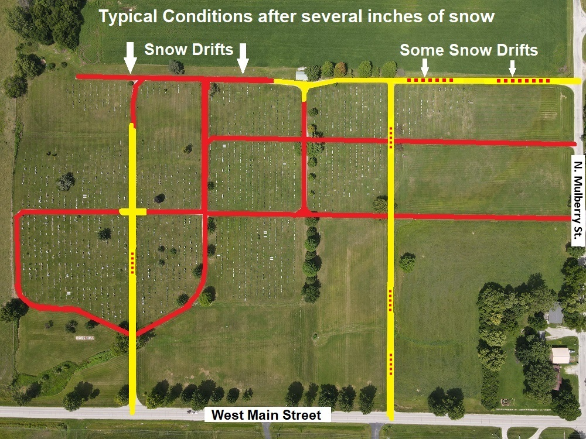

Snow is NOT removed from roadways unless necessary for a burial, and even then only for access to the gravesite. Do not attempt to drive on cemetery roadways that you cannot see. Drivers with all-wheel drive can proceed slowly over a snow covered road that they clearly recognize as a roadway, but should not try to drive through deep drifts. The map below shows which roadways are usually more passable in Yellow than those that are not in Red. Use common sense.
